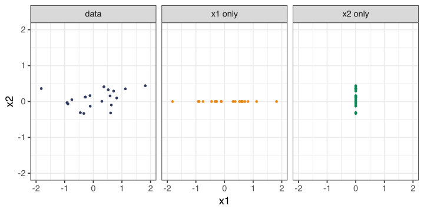
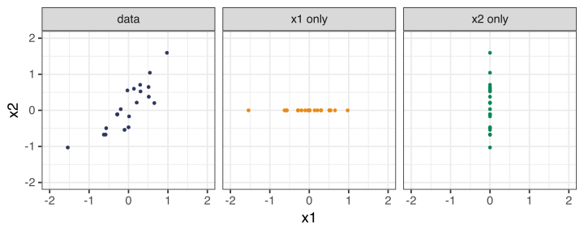
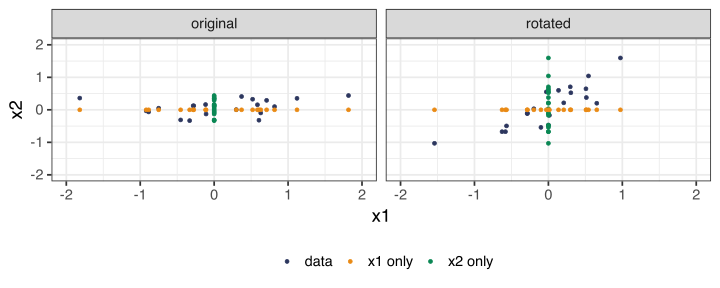
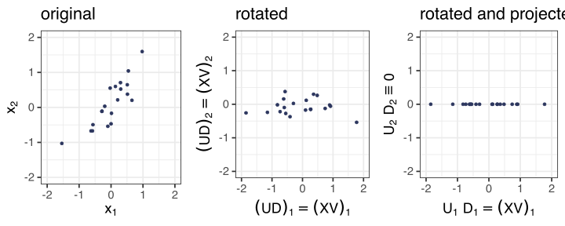
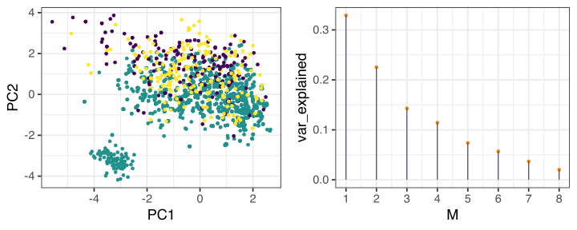
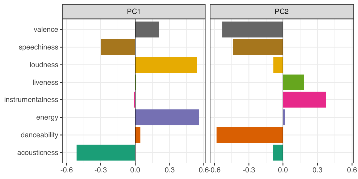

24 Principal components, introduction
Stat 406
Geoff Pleiss, Trevor Campbell
Last modified – 24 November 2023
\[
\DeclareMathOperator*{\argmin}{argmin}
\DeclareMathOperator*{\argmax}{argmax}
\DeclareMathOperator*{\minimize}{minimize}
\DeclareMathOperator*{\maximize}{maximize}
\DeclareMathOperator*{\find}{find}
\DeclareMathOperator{\st}{subject\,\,to}
\newcommand{\E}{E}
\newcommand{\Expect}[1]{\E\left[ #1 \right]}
\newcommand{\Var}[1]{\mathrm{Var}\left[ #1 \right]}
\newcommand{\Cov}[2]{\mathrm{Cov}\left[#1,\ #2\right]}
\newcommand{\given}{\ \vert\ }
\newcommand{\X}{\mathbf{X}}
\newcommand{\x}{\mathbf{x}}
\newcommand{\y}{\mathbf{y}}
\newcommand{\P}{\mathcal{P}}
\newcommand{\R}{\mathbb{R}}
\newcommand{\norm}[1]{\left\lVert #1 \right\rVert}
\newcommand{\snorm}[1]{\lVert #1 \rVert}
\newcommand{\tr}[1]{\mbox{tr}(#1)}
\newcommand{\brt}{\widehat{\beta}^R_{s}}
\newcommand{\brl}{\widehat{\beta}^R_{\lambda}}
\newcommand{\bls}{\widehat{\beta}_{ols}}
\newcommand{\blt}{\widehat{\beta}^L_{s}}
\newcommand{\bll}{\widehat{\beta}^L_{\lambda}}
\newcommand{\U}{\mathbf{U}}
\newcommand{\D}{\mathbf{D}}
\newcommand{\V}{\mathbf{V}}
\]
Unsupervised learning
In Machine Learning, rather than calling \(\y\) the response, people call it the supervisor
So unsupervised learning means learning without \(\y\)
The only data you get are the features \(\{x_1,\ldots,x_n\}\).
This type of analysis is more often exploratory
We’re not necessarily using this for prediction (but we could)
So now, we get \(\X\)
The two main activities are representation learning and clustering
Representation learning
Representation learning is the idea that performance of ML methods is highly dependent on the choice of representation
For this reason, much of ML is geared towards transforming the data into the relevant features and then using these as inputs
This idea is as old as statistics itself, really,
However, the idea is constantly revisited in a variety of fields and contexts
Commonly, these learned representations capture low-level information like overall shapes
It is possible to quantify this intuition for PCA at least
- Goal
-
Transform \(\mathbf{X}\in \R^{n\times p}\) into \(\mathbf{Z} \in \R^{n \times ?}\)
?-dimension can be bigger (feature creation) or smaller (dimension reduction) than \(p\)
You’ve done this already!
You added transformations as predictors in regression
You “expanded” \(\mathbf{X}\) using a basis \(\Phi\) (polynomials, splines, etc.)
You used Neural Nets to do a “feature map”
This is the same, just no \(Y\) around
PCA
Principal components analysis (PCA) is an (unsupervised) dimension reduction technique
It solves various equivalent optimization problems
(Maximize variance, minimize \(\ell_2\) distortions, find closest subspace of a given rank, \(\ldots\))
At its core, we are finding linear combinations of the original (centered) covariates \[z_{ij} = \alpha_j^{\top} x_i\]
This is expressed via the SVD: \(\X = \U\D\V^{\top}\).
We assume throughout that \(\X - \mathbf{11^\top}\overline{x} = 0\) (we center the columns)
Then our new features are
\[\mathbf{Z} = \X \V = \U\D\]
Short SVD aside (reminder from Ridge Regression)
- \(\mathbf{U}^\top \mathbf{U} = \mathbf{I}_n\)
- \(\mathbf{V}^\top \mathbf{V} = \mathbf{I}_p\)
- \(\mathbf{D}\) is diagonal (0 off the diagonal)
Almost all the methods for we’ll talk about for representation learning use the SVD of some matrix.
Why?
Given \(\X\), find a projection \(\mathbf{P}\) onto \(\R^M\) with \(M \leq p\) that minimizes the reconstruction error \[
\begin{aligned}
\min_{\mathbf{P}} &\,\, \lVert \mathbf{X} - \mathbf{X}\mathbf{P} \rVert^2_F \,\,\, \textrm{(sum all the elements)}\\
\textrm{subject to} &\,\, \textrm{rank}(\mathbf{P}) = M,\, \mathbf{P} = \mathbf{P}^T,\, \mathbf{P} = \mathbf{P}^2
\end{aligned}
\] The conditions ensure that \(\mathbf{P}\) is a projection matrix onto \(M\) dimensions.
Maximize the variance explained by an orthogonal transformation \(\mathbf{A} \in \R^{p\times M}\) \[
\begin{aligned}
\max_{\mathbf{A}} &\,\, \textrm{trace}\left(\frac{1}{n}\mathbf{A}^\top \X^\top \X \mathbf{A}\right)\\
\textrm{subject to} &\,\, \mathbf{A}^\top\mathbf{A} = \mathbf{I}_M
\end{aligned}
\]
- In case one, the minimizer is \(\mathbf{P} = \mathbf{V}_M\mathbf{V}_M^\top\)
- In case two, the maximizer is \(\mathbf{A} = \mathbf{V}_M\).
Lower dimensional embeddings
Suppose we have predictors \(\x_1\) and \(\x_2\)
- We more faithfully preserve the structure of this data by keeping \(\x_1\) and setting \(\x_2\) to zero than the opposite

Lower dimensional embeddings
An important feature of the previous example is that \(\x_1\) and \(\x_2\) aren’t correlated
What if they are?
We lose a lot of structure by setting either \(\x_1\) or \(\x_2\) to zero
Lower dimensional embeddings
The only difference is the first is a rotation of the second

PCA
If we knew how to rotate our data, then we could more easily retain the structure.
PCA gives us exactly this rotation
- Center (+scale?) the data matrix \(\X\)
- Compute the SVD of \(\X = \U\D \V^\top\) or \(\X\X^\top = \U\D^2\U^\top\) or \(\X^\top \X = \V\D^2 \V^\top\)
- Return \(\U_M\D_M\), where \(\D_M\) is the largest \(M\) singular values of \(\X\)
PCA
Code
s <- svd(X)
tib <- rbind(X, s$u %*% diag(s$d), s$u %*% diag(c(s$d[1], 0)))
tib <- tibble(
x1 = tib[, 1], x2 = tib[, 2],
name = rep(1:3, each = 20)
)
plotter <- function(set = 1, main = "original") {
tib |>
filter(name == set) |>
ggplot(aes(x1, x2)) +
geom_point(colour = blue) +
coord_cartesian(c(-2, 2), c(-2, 2)) +
theme(legend.title = element_blank(), legend.position = "bottom") +
ggtitle(main)
}
cowplot::plot_grid(
plotter() + labs(x = bquote(x[1]), y = bquote(x[2])),
plotter(2, "rotated") +
labs(x = bquote((UD)[1] == (XV)[1]), y = bquote((UD)[2] == (XV)[2])),
plotter(3, "rotated and projected") +
labs(x = bquote(U[1] ~ D[1] == (XV)[1]), y = bquote(U[2] ~ D[2] %==% 0)),
nrow = 1
)

PCA on some pop music data
music <- Stat406::popmusic_train
str(music)
tibble [1,269 × 15] (S3: tbl_df/tbl/data.frame)
$ artist : Factor w/ 3 levels "Radiohead","Taylor Swift",..: 2 2 2 2 2 2 2 2 2 2 ...
$ danceability : num [1:1269] 0.781 0.627 0.516 0.629 0.686 0.522 0.31 0.705 0.553 0.419 ...
$ energy : num [1:1269] 0.357 0.266 0.917 0.757 0.705 0.691 0.374 0.621 0.604 0.908 ...
$ key : int [1:1269] 0 9 11 1 9 2 6 2 1 9 ...
$ loudness : num [1:1269] -16.39 -15.43 -3.19 -8.37 -10.82 ...
$ mode : int [1:1269] 1 1 0 0 1 1 1 1 0 1 ...
$ speechiness : num [1:1269] 0.912 0.929 0.0827 0.0512 0.249 0.0307 0.0275 0.0334 0.0258 0.0651 ...
$ acousticness : num [1:1269] 0.717 0.796 0.0139 0.00384 0.832 0.00609 0.761 0.101 0.202 0.00048 ...
$ instrumentalness: num [1:1269] 0.00 0.00 6.37e-06 7.45e-01 4.55e-06 0.00 2.46e-05 4.30e-06 0.00 0.00 ...
$ liveness : num [1:1269] 0.185 0.292 0.36 0.0864 0.134 0.249 0.11 0.147 0.125 0.815 ...
$ valence : num [1:1269] 0.645 0.646 0.635 0.623 0.919 0.651 0.16 0.395 0.186 0.472 ...
$ tempo : num [1:1269] 118.3 79.3 145.8 157 151.9 ...
$ time_signature : int [1:1269] 4 4 4 4 5 4 4 4 4 4 ...
$ duration_ms : int [1:1269] 107133 89648 217160 201853 180653 201106 285640 240773 302266 290520 ...
$ explicit : logi [1:1269] FALSE FALSE FALSE FALSE FALSE FALSE ...
X <- music |> select(danceability:energy, loudness, speechiness:valence)
pca <- prcomp(X, scale = TRUE) ## DON'T USE princomp()
PCA on some pop music data
proj_pca <- predict(pca)[,1:2] |>
as_tibble() |>
mutate(artist = music$artist)

Things to look at
PC1 PC2
danceability -0.02811038 0.577020027
energy -0.56077454 -0.001137424
loudness -0.53893087 0.085912854
speechiness 0.30125038 0.431188730
acousticness 0.51172138 0.082108326
instrumentalness 0.01374425 -0.370058813
liveness -0.02282669 -0.194947054
valence -0.20242211 0.540418541
[1] 1.6233469 1.3466829 1.0690017 0.9510417 0.7638669 0.6737958 0.5495869
[8] 0.4054698
pca$sdev^2 / sum(pca$sdev^2)
[1] 0.32940690 0.22669435 0.14284558 0.11306004 0.07293658 0.05675010 0.03775572
[8] 0.02055072
Plotting the weights
Code
pca$rotation[, 1:2] |>
as_tibble() |>
mutate(feature = names(X)) |>
pivot_longer(-feature) |>
ggplot(aes(value, feature, fill = feature)) +
facet_wrap(~name) +
geom_col() +
theme(legend.position = "none", axis.title = element_blank()) +
scale_fill_brewer(palette = "Dark2") +
geom_vline(xintercept = 0)

Next time…
When does PCA work?